Capítulo 3 Análisis univariado
3.1 Vista inicial y faltantes
summary_tbl <- tibble(
variable = names(df),
tipo = vapply(df, function(x) class(x)[1], FUN.VALUE = character(1)),
faltantes = vapply(df, function(x) sum(is.na(x)), FUN.VALUE = integer(1))
)
knitr::kable(summary_tbl, caption = "Estructura básica y faltantes por variable")| variable | tipo | faltantes |
|---|---|---|
| Hypocenter Depth (km) | numeric | 0 |
| Magnitude | numeric | 0 |
| Rrup_OpenQuake | numeric | 0 |
| Soil_Class | factor | 0 |
| Tmax | numeric | 35 |
| origen | factor | 0 |
| Seismic Latitude | numeric | 0 |
| Seismic Longitude | numeric | 0 |
| Station Latitude | numeric | 0 |
| Station Longitude | numeric | 0 |
| T_0.01_RotD50 | numeric | 0 |
| Sa_0_01 | numeric | 0 |
| log_Rrup | numeric | 17 |
3.2 Variable objetivo: T_0.01_RotD50
La variable de respuesta se almacena como logaritmo natural. Para facilitar la interpretación física, en esta sección se trabaja sobre Sa_0_01 = exp(T_0.01_RotD50).
cont_summary(df, "Sa_0_01") |>
knitr::kable(digits = 4, caption = "Resumen de la variable respuesta en escala física")| variable | n | missing | min | q1 | median | mean | q3 | max | sd |
|---|---|---|---|---|---|---|---|---|---|
| Sa_0_01 | 10239 | 0 | 1e-04 | 0.0053 | 0.017 | 0.0553 | 0.0566 | 1.7932 | 0.1075 |
ggplot(df, aes(x = Sa_0_01)) +
geom_histogram(bins = 50, fill = "#2c7fb8", color = "white") +
scale_x_log10(labels = label_scientific()) +
labs(
title = "Histograma de Sa(T = 0.01 s) en escala física",
x = "Sa_0.01",
y = "Frecuencia"
)
ggplot(df, aes(x = Sa_0_01)) +
stat_ecdf(geom = "step", linewidth = 0.9, color = "#045a8d") +
scale_x_log10(labels = label_scientific()) +
labs(
title = "ECDF de Sa(T = 0.01 s)",
x = "Sa_0.01",
y = "F(x)"
)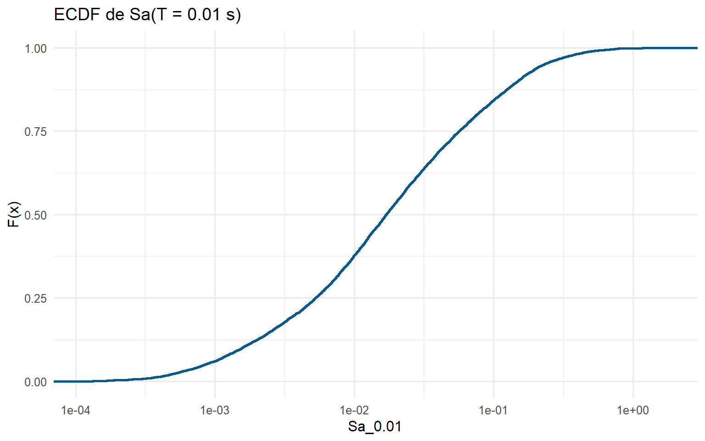
ggplot(df, aes(x = Sa_0_01, y = "")) +
geom_boxplot(fill = "#2c7fb8", outlier.alpha = 0.35) +
scale_x_log10(labels = label_scientific()) +
labs(
title = "Boxplot de Sa(T = 0.01 s)",
x = "Sa_0.01",
y = NULL
)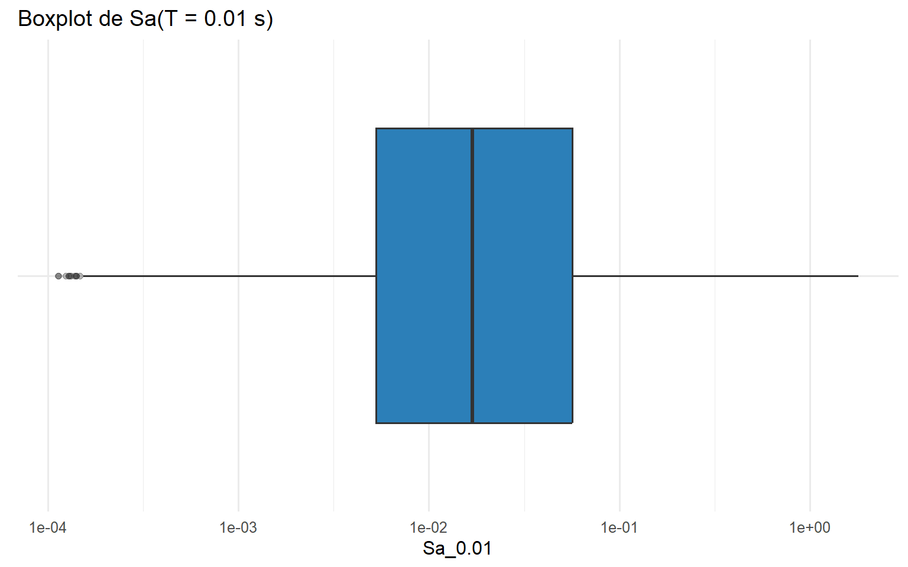
La distribución de la respuesta es marcadamente asimétrica hacia la derecha: la mayoría de observaciones se concentra en niveles bajos de aceleración y aparece una cola de registros con amplitudes considerablemente mayores. En las gráficas logra apreciarse la conclusión al ver la escala del eje de las X, ya que este está en log. Si no estuviese mostraría el sesgo.
ggplot(df, aes(x = Sa_0_01)) +
geom_histogram(bins = 50, fill = "#2c7fb8", color = "white") +
labs(
title = "Histograma de Sa(T = 0.01 s)",
x = "Sa_0.01",
y = "Frecuencia"
)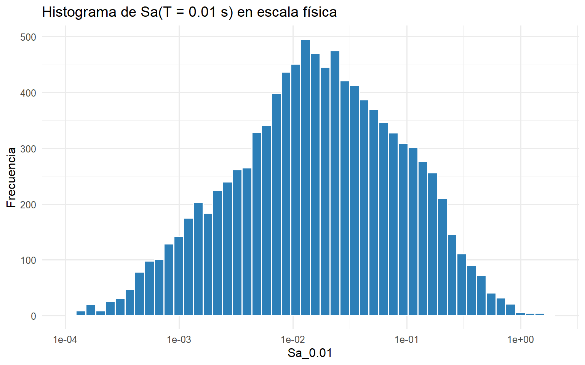
3.3 Magnitude
| variable | n | missing | min | q1 | median | mean | q3 | max | sd |
|---|---|---|---|---|---|---|---|---|---|
| Magnitude | 10239 | 0 | 3.2 | 5.17 | 6.2 | 5.912 | 6.8 | 7.9 | 1.14 |
ggplot(df, aes(x = Magnitude)) +
geom_histogram(bins = 35, fill = "#2c7fb8", color = "white") +
labs(title = "Distribución de la magnitud", x = "Magnitude", y = "Frecuencia")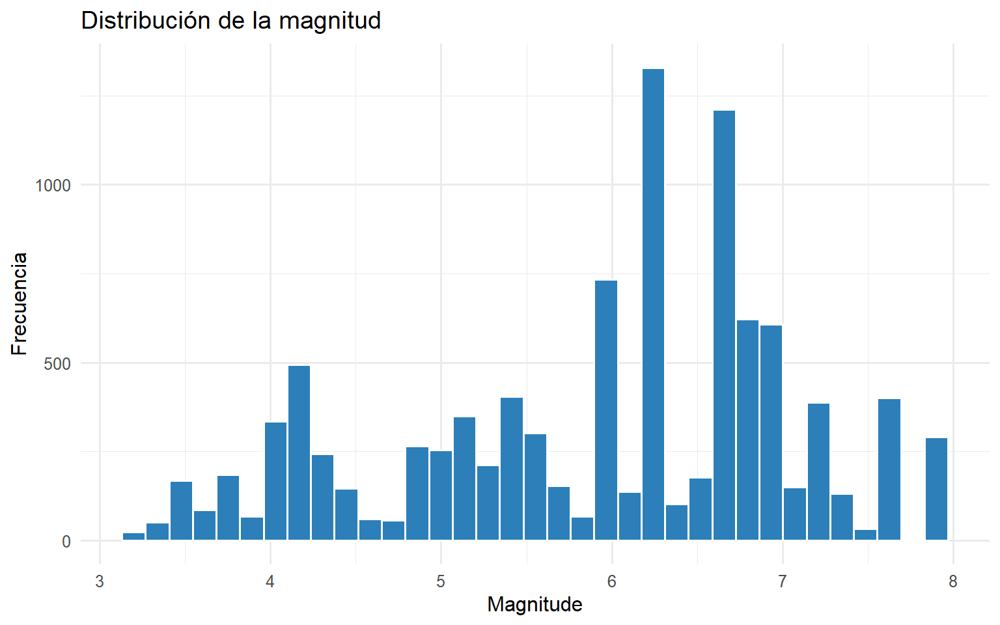
ggplot(df, aes(x = Magnitude)) +
stat_ecdf(geom = "step", linewidth = 0.9, color = "#2c7fb8") +
labs(title = "ECDF de magnitud", x = "Magnitude", y = "F(x)")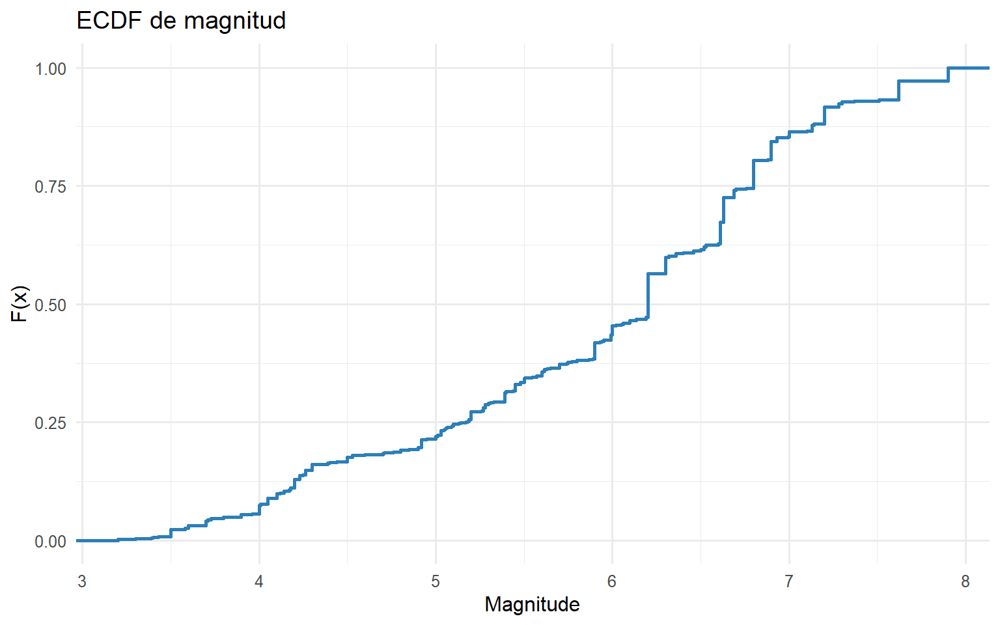
La distribución de magnitud es multimodal, consistente con un dataset integrado a partir de múltiples contextos o subconjuntos de eventos.
3.4 Hypocenter Depth (km)
cont_summary(df, "Hypocenter Depth (km)") |>
knitr::kable(digits = 3, caption = "Resumen de profundidad hipocentral")| variable | n | missing | min | q1 | median | mean | q3 | max | sd |
|---|---|---|---|---|---|---|---|---|---|
| Hypocenter Depth (km) | 10239 | 0 | 1.331 | 7.507 | 10 | 10.611 | 13.3 | 58.7 | 5.111 |
ggplot(df, aes(x = `Hypocenter Depth (km)`)) +
geom_histogram(bins = 40, fill = "#2c7fb8", color = "white") +
labs(title = "Distribución de la profundidad hipocentral", x = "Profundidad (km)", y = "Frecuencia")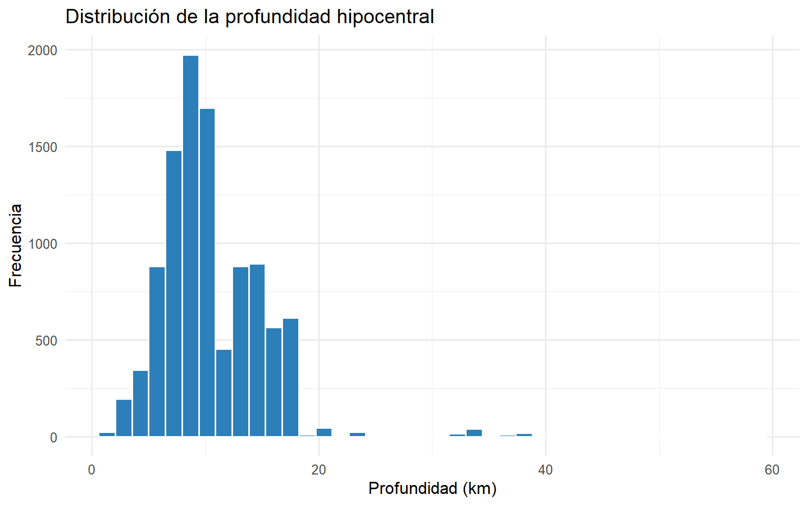
ggplot(df, aes(x = `Hypocenter Depth (km)`, y = "")) +
geom_boxplot(fill = "#2c7fb8", outlier.alpha = 0.35) +
labs(title = "Boxplot de profundidad hipocentral", x = "Profundidad (km)", y = NULL)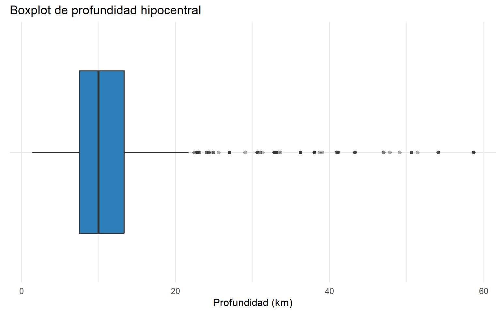
La mayor parte de registros corresponde a eventos someros. La cola hacia profundidades mayores existe, pero representa una fracción claramente menor del conjunto.
3.5 Rrup_OpenQuake
La variable Rrup_OpenQuake se encuentra almacenada en escala logarítmica natural. Por tanto, las siguientes visualizaciones describen la distribución de ln(Rrup) y no la distancia física original en kilómetros.
| variable | n | missing | min | q1 | median | mean | q3 | max | sd |
|---|---|---|---|---|---|---|---|---|---|
| Rrup_OpenQuake | 10239 | 0 | -2.996 | 3.553 | 4.269 | 4.207 | 4.979 | 7.335 | 1.027 |
ggplot(df, aes(x = Rrup_OpenQuake)) +
geom_histogram(bins = 50, fill = "#2c7fb8", color = "white") +
labs(
title = "Distribución de ln(Rrup_OpenQuake)",
x = "ln(Rrup_OpenQuake)",
y = "Frecuencia"
)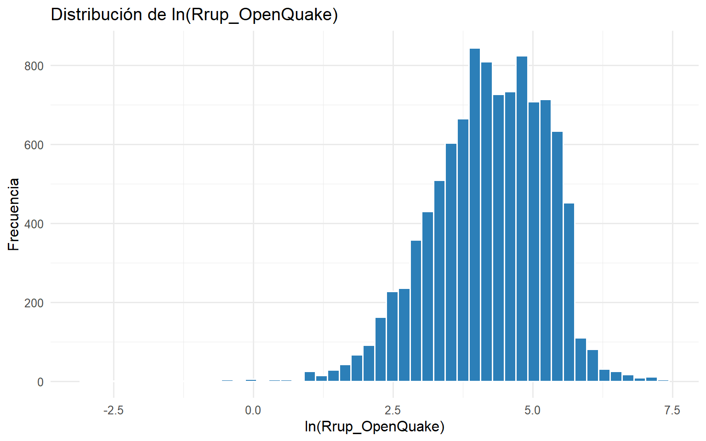
ggplot(df, aes(x = Rrup_OpenQuake)) +
stat_ecdf(geom = "step", linewidth = 0.9, color = "#2c7fb8") +
labs(
title = "ECDF de ln(Rrup_OpenQuake)",
x = "ln(Rrup_OpenQuake)",
y = "F(x)"
)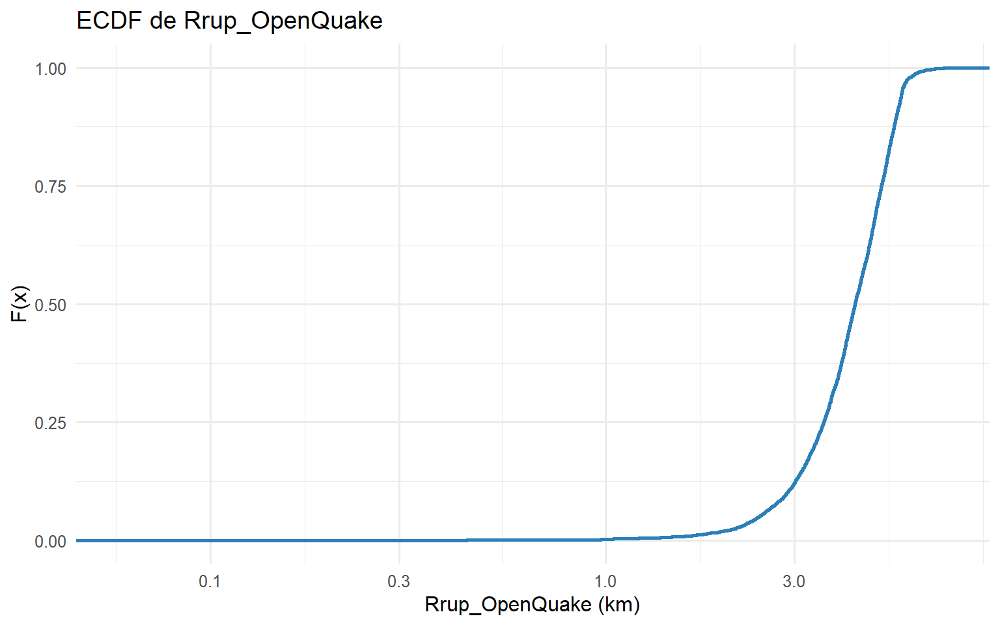
En la escala logarítmica almacenada, Rrup_OpenQuake presenta mayor concentración en valores relativamente altos de ln(Rrup) y una cola hacia valores bajos, lo que corresponde a una asimetría hacia la izquierda en esta escala. Esta forma es consistente con una compresión de las distancias grandes y una expansión relativa de las distancias pequeñas producida por la transformación logarítmica.
3.6 Tmax
| variable | n | missing | min | q1 | median | mean | q3 | max | sd |
|---|---|---|---|---|---|---|---|---|---|
| Tmax | 10204 | 35 | 0.095 | 3.478 | 8.889 | 13.212 | 20 | 133.333 | 12.732 |
ggplot(df, aes(x = Tmax)) +
geom_histogram(bins = 45, fill = "#2c7fb8", color = "white") +
labs(title = "Distribución de Tmax", x = "Tmax (s)", y = "Frecuencia")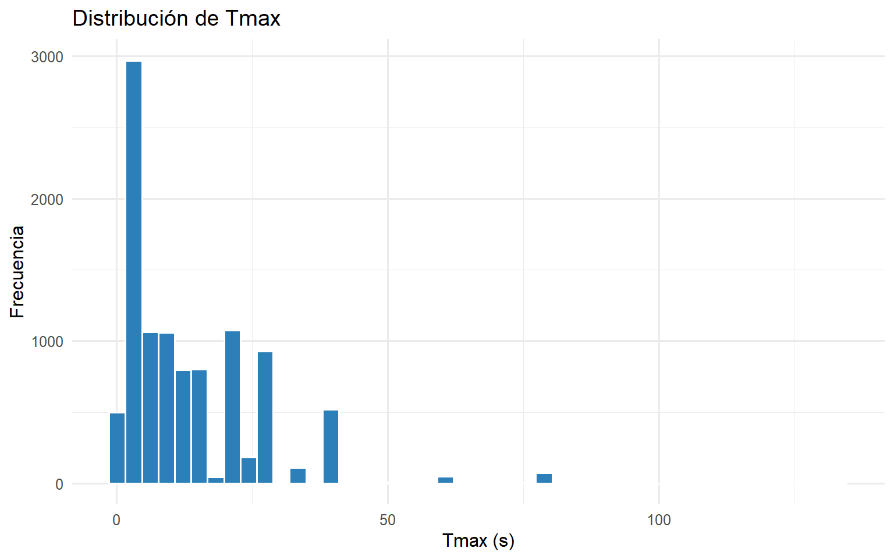
Tmax se concentra en valores relativamente bajos, lo que sugiere que gran parte del dataset cuenta con un rango confiable corto o medio dentro del dominio espectral.
3.7 Soil_Class
soil_counts <- df |>
count(Soil_Class) |>
mutate(porcentaje = n / sum(n))
knitr::kable(soil_counts, digits = 3, caption = "Conteo y proporción por Soil_Class")| Soil_Class | n | porcentaje |
|---|---|---|
| 1 | 110 | 0.011 |
| 2 | 1571 | 0.153 |
| 3 | 6053 | 0.591 |
| 4 | 2066 | 0.202 |
| 5 | 439 | 0.043 |
ggplot(soil_counts, aes(x = Soil_Class, y = n)) +
geom_col(fill = "#3182bd") +
labs(title = "Frecuencia por clase de suelo", x = "Soil_Class", y = "Número de registros")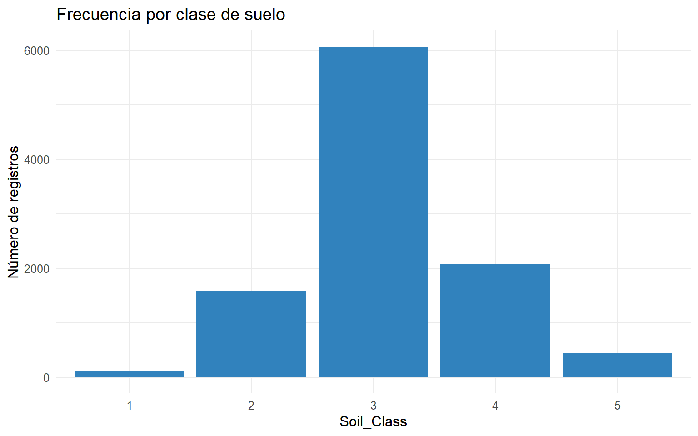
La base está desbalanceada entre clases de suelo; una de las implicaciones es que las comparaciones y modelos posteriores deben interpretar con cautela las categorías menos representadas.
3.8 Estaciones sísmicas y eventos
est_tbl <- tibble(
indicador = c("Ubicaciones únicas de estación", "Ubicaciones únicas de evento"),
valor = c(
n_distinct(paste(df$`Station Latitude`, df$`Station Longitude`)),
n_distinct(paste(df$`Seismic Latitude`, df$`Seismic Longitude`))
)
)
knitr::kable(est_tbl, caption = "Cobertura espacial básica del dataset")| indicador | valor |
|---|---|
| Ubicaciones únicas de estación | 4113 |
| Ubicaciones únicas de evento | 403 |
3.9 Distribución de origen
origin_counts <- df |>
count(origen) |>
mutate(porcentaje = n / sum(n))
knitr::kable(origin_counts, digits = 3, caption = "Distribución por origen")| origen | n | porcentaje |
|---|---|---|
| Colombia | 537 | 0.052 |
| NGAW2 | 9702 | 0.948 |
ggplot(origin_counts, aes(x = origen, y = n)) +
geom_col(fill = "#4F81BD", show.legend = FALSE) +
labs(
title = "Distribución de registros por origen",
x = "Origen",
y = "Número de registros"
)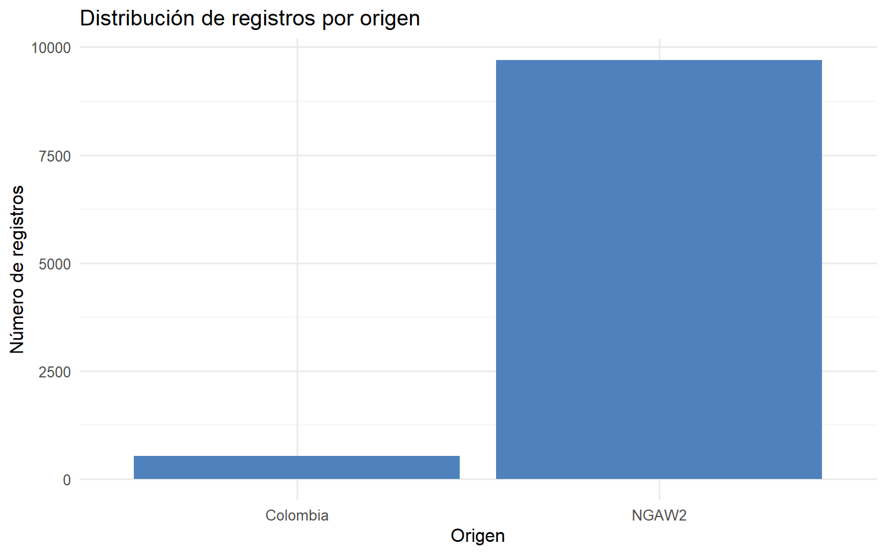
El origen del dataset no está balanceado. Ese hecho es metodológicamente importante porque cualquier resultado agregado puede reflejar más el comportamiento del grupo dominante que el del subconjunto colombiano.
3.10 Pruebas de normalidad
normality_tbl <- ks_normality_table(
df,
c("Hypocenter Depth (km)", "Magnitude", "Rrup_OpenQuake", "Tmax", "T_0.01_RotD50")
)
knitr::kable(normality_tbl, digits = 5, caption = "Pruebas KS sobre variables estandarizadas")| variable | p_value | conclusion |
|---|---|---|
| Hypocenter Depth (km) | 0.00000 | Se rechaza normalidad |
| Magnitude | 0.00000 | Se rechaza normalidad |
| Rrup_OpenQuake | 0.00000 | Se rechaza normalidad |
| Tmax | 0.00000 | Se rechaza normalidad |
| T_0.01_RotD50 | 0.00044 | Se rechaza normalidad |
Como ocurre con frecuencia en bases sísmicas y en muestras grandes, la evidencia apunta a distribuciones no normales en varias de las variables numéricas principales. Eso respalda el uso de visualizaciones robustas, escalas logarítmicas y medidas no paramétricas en el resto del EDA.